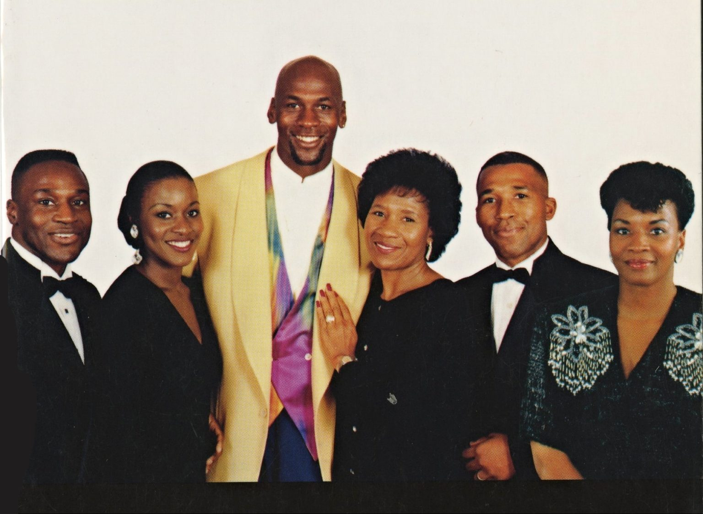

“I've missed more than 9000 shots in my career. I've lost almost 300 games. 26 times, I've been trusted to take the game winning shot and missed. I've failed over and over and over again in my life. And that is why I succeed.” ― Michael Jordan
Books
- Michael Jordan: The Life
- Driven from within (Michael Jordan, 2005)
- For the Love of the Game : my story